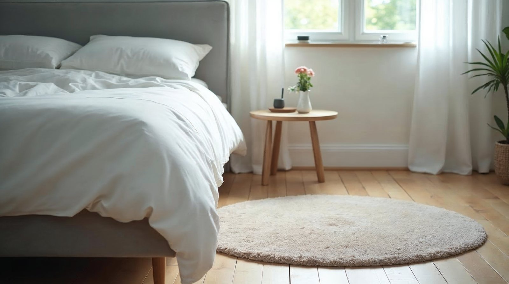
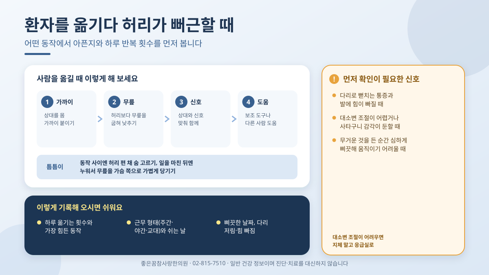

이종호 한의사 감수좋은꿈참사랑한의원 대표원장 (한의사 면허번호 19769)발행 2026-11-23 · 수정 2026-11-26
이 글의 차례
- 왜 이런 불편이 생길 수 있나요
- 먼저 이렇게 여쭙니다
- 일상에서 먼저 해 볼 수 있는 것
- 상황별 예시
- 스스로 점검해 보세요
- 같은 허리 통증이라도 어떻게 다른가요?
- 왜 새벽이나 근무 끝 무렵에 더 뜨끔할까요
- 돌보는 분 자신의 몸도 계획에 넣어 보세요
- 혼자 옮겨야 하는 상황, 미리 정해 둘 것은 무엇인가요?
- 한의원에서는 어떤 치료를 어떻게 정하나요?
- 집에서 가족을 돌본다면 환경부터 살펴보세요
- 쉬는 날 허리를 어떻게 보내면 좋을까요?
- 한의원에서 함께 살필 수 있는 경우
- 얼마나 지켜보고 언제 상담할까요
- 이렇게 기록해 오시면 상담이 쉬워집니다
- 이런 증상은 먼저 확인이 필요합니다
- 관련 글
침대에서 일으키고 휠체어로 옮기고 자세를 바꿔 드리는 동작은 하루에도 여러 번 반복됩니다. 한 번 한 번은 작아 보여도 쌓이면 허리가 먼저 신호를 보내기 쉽습니다. 아픈 동작을 정확히 알면 몸 쓰는 방법을 바꾸기가 쉬워집니다.
왜 이런 불편이 생길 수 있나요
- 상대를 몸에서 멀리 둔 채 들어 올리면 같은 무게라도 허리에 걸리는 부담이 훨씬 커집니다.
- 허리를 굽힌 채 몸을 비틀며 옮기면 허리 근육과 관절의 한쪽으로 힘이 몰리기 쉽습니다.
- 낮은 침대에서 기저귀를 갈거나 몸을 닦아 드리는 동안 허리를 숙인 자세가 길게 이어집니다.
- 야간 근무나 교대 근무로 잠이 부족하면 근육의 피로가 잘 풀리지 않을 수 있습니다.
- 서두르는 상황에서 혼자 옮기는 일이 잦으면 갑자기 삐끗할 위험이 커집니다.
먼저 이렇게 여쭙니다
- 어떤 동작을 할 때 허리가 가장 뻐근한가요? 일으킬 때인지, 옮길 때인지요.
- 하루에 이런 동작을 대략 몇 번 하시나요?
- 혼자 하시나요, 도와주는 사람이 있는 때가 있나요?
- 야간 근무나 교대 근무가 있나요?
- 쉬는 날에는 어느 정도 가라앉나요?
일상에서 먼저 해 볼 수 있는 것
옮기기 직전 10초
- 침대 높이를 조절할 수 있다면 내 엉덩이와 허리 사이 높이로 올립니다.
- 발을 어깨너비로 벌리고 한 발을 옮길 방향으로 내딛은 뒤, 상대를 몸 가까이 붙이고 허리를 굽히기보다 무릎을 굽혀 낮춥니다.
- 상대와 "하나, 둘" 신호를 맞추고 숨을 내쉬며 함께 움직입니다. 몸은 허리로 비틀지 말고 발을 옮겨 방향을 바꿉니다.
- 사업장에 이동 보드나 미끄럼 시트, 리프트 같은 보조 도구가 있다면 사용법을 확인해 함께 쓰고, 무겁다고 느껴지면 다른 사람의 도움을 청합니다.
동작 사이 1~2분
- 양손을 허리 뒤에 대고 허리를 천천히 살짝 젖혔다 돌아오기를 5번 합니다. 오래 숙인 뒤 반대로 펴 주는 동작이며, 아프면 멈춥니다.
- 벽을 짚고 서서 숨을 길게 내쉬기를 5번 하며 허리와 어깨의 힘을 뺍니다.
쉬는 시간 5분
- 의자에 앉아 한쪽 발목을 반대쪽 무릎 위에 올리고 상체를 살짝 숙여 엉덩이 뒤쪽을 20초씩 늘립니다.
- 물을 마시고, 가능하면 끼니를 미루지 않습니다.
퇴근 뒤 10분
- 바로 누워 무릎을 세우고 두 무릎을 좌우로 천천히 눕히기를 10번 합니다.
- 무릎을 가슴 쪽으로 가볍게 당겨 20초 머물기를 3번 하며 허리 긴장을 풉니다.
- 야간 근무를 마친 날은 따뜻한 물로 씻은 뒤 방을 어둡게 하고 바로 잠자리에 듭니다.
상황별 예시
- 예를 들어 요양시설에서 교대 근무를 하는 요양보호사가 새벽에 체위 변경과 기저귀 교체가 몰리는 시간마다 허리가 뜨끔하다면, 그 시간대에 침대 높이를 올리고 있는지와 둘이 함께 옮길 수 있는지부터 확인하고 동작 사이 1분 허리 펴기를 넣어 봅니다.
- 예를 들어 집에서 거동이 불편한 부모님을 돌보는 가족이 휠체어로 옮길 때마다 허리가 뻐근하다면, 혼자 들어 올리기보다 부모님이 스스로 쓸 수 있는 힘을 먼저 쓰시게 하고 쓸 수 있는 보조 도구가 있는지 알아봅니다.
- 예를 들어 병원에서 간병하며 보호자 침대에서 쪽잠을 자는 분이라면, 허리 통증과 함께 잠이 무너져 있는 경우가 많아 잠자리와 쉬는 시간부터 함께 살핍니다.
스스로 점검해 보세요
- 사람을 일으키거나 옮길 때 허리가 뜨끔한 일이 일주일에 두 번 이상 있다.
- 침대 높이를 맞추지 못하고 허리를 숙인 채 일하는 때가 많다.
- 옮기는 일을 대부분 혼자 한다.
- 근무를 마친 뒤 허리를 펴는 데 시간이 걸린다.
- 아침에 일어날 때 허리가 가장 뻣뻣하다.
- 엉덩이나 다리 쪽으로 당기는 느낌이 가끔 있다.
- 교대 근무로 잠이 6시간이 안 되는 날이 많다.
같은 허리 통증이라도 어떻게 다른가요?
돌보는 일을 하시는 분의 허리 통증은 몇 갈래로 나뉘는 경우가 많습니다. 어떤 갈래인지에 따라 쉬는 방법과 다시 일할 때 조심할 점이 달라져서, 처음에는 아픈 느낌을 자세히 여쭙습니다.
- 근육이 지친 뻐근함: 근무가 끝날수록 묵직하고, 쉬는 날에는 덜해지는 흐름입니다. 허리 양옆이 넓게 뭉친 느낌이 많습니다.
- 갑자기 삐끗한 통증: 옮기는 순간 '뜨끔' 하고 나서 허리를 펴거나 돌리기 어려워집니다. 며칠 동안 특정 동작에서 크게 아픈 양상이 많습니다.
- 다리로 내려가는 당김: 엉덩이나 허벅지 뒤, 종아리 쪽으로 저리거나 당기는 느낌이 함께 있습니다. 허리를 숙이거나 오래 앉으면 더해지기도 합니다.
- 아침에 유난히 뻣뻣한 허리: 일어날 때가 가장 굳어 있고 움직이면서 조금씩 풀립니다. 잠이 부족했던 날 더 심하다는 분이 많습니다.
이 가운데 두 가지 이상이 겹쳐 있는 경우도 흔합니다. 언제, 어떤 동작에서, 어느 쪽으로 아픈지를 알려 주시면 갈래를 나누는 데 큰 도움이 됩니다.
왜 새벽이나 근무 끝 무렵에 더 뜨끔할까요
야간 근무의 새벽 시간은 몸이 가장 지쳐 있고 체온도 낮아지는 때입니다. 근육이 덜 풀린 상태에서 체위 변경과 기저귀 교체가 몰리면, 같은 동작도 허리에 더 크게 부담이 될 수 있습니다.
근무 끝 무렵에는 남은 일을 서둘러 마치려는 마음이 앞섭니다. 침대 높이를 맞추는 한두 동작을 건너뛰거나, 도와줄 사람을 기다리지 않고 혼자 옮기는 일이 이때 많아집니다.
배가 고프거나 물을 오래 마시지 않은 상태도 피로를 키웁니다. 그래서 허리가 뜨끔했던 시간대를 적어 보면, 지치고 서두르는 시간과 겹치는 경우가 적지 않습니다.
돌보는 분 자신의 몸도 계획에 넣어 보세요
남을 돌보는 일을 하다 보면 내 몸은 늘 뒤로 밀립니다. 허리가 아파도 오늘 맡은 분이 먼저라 참고 넘기다가, 쉬는 날에야 통증이 한꺼번에 몰려오는 경우가 많습니다.
- 근무표를 받으면 쉬는 날 중 하루는 몸을 돌보는 날로 먼저 정해 둡니다.
- 끼니는 간단하더라도 앉아서 먹고, 따뜻한 국물이나 물을 함께 챙깁니다.
- 마음이 지쳐 있다면 그것도 진료 때 말씀해 주세요. 돌보는 일의 무게는 몸의 긴장으로 이어지는 경우가 많습니다.
집에서 가족을 돌보는 분이라면 하루 중 혼자 쉬는 10분을 정해 두는 것부터 시작해 보세요. 짧은 시간이라도 허리를 펴고 숨을 고르는 틈이 있으면 하루의 무게가 조금 달라집니다.
혼자 옮겨야 하는 상황, 미리 정해 둘 것은 무엇인가요?
일터마다 사정이 달라 늘 두 사람이 함께 옮기기는 어렵습니다. 그래서 혼자 해야 할 때의 순서를 미리 정해 두면, 서두르는 순간에도 몸이 그 순서를 따라가기 쉽습니다.
- 옮기기 전에 상대에게 어떻게 움직일지 먼저 설명하고, 상대가 쓸 수 있는 힘을 함께 쓰시게 합니다.
- 침대 높이, 휠체어 브레이크, 발판 위치를 확인한 다음에 몸을 숙입니다.
- 무겁다고 느껴지는 순간 멈추고, 다시 자세를 잡거나 도움을 청합니다.
바쁜 날일수록 이 순서를 건너뛰기 쉽습니다. 서두르는 순간에 한 번 멈춰 설 틈을 남겨 두는 것, 그것이 이 순서를 미리 정해 두는 이유입니다.
한의원에서는 어떤 치료를 어떻게 정하나요?
치료는 그날 진찰에서 보이는 것에 따라 고릅니다. 예를 들어 허리 근육이 넓게 굳어 있으면 침이나 약침을, 골반과 허리의 움직임이 한쪽으로 치우쳐 있으면 추나를, 몸이 차고 피로가 깊으면 온열 물리치료를 함께 생각해 볼 수 있습니다. 그날의 통증과 다리 증상에 따라 순서와 세기도 달라집니다.
잠과 식사가 오래 흐트러져 지친 분이라면 한약을 함께 상의하기도 합니다. 이때는 지금 드시는 약을 먼저 확인하고, 임신 중이거나 계획이 있다면 미리 말씀해 주세요.
치료를 받으면서도 일을 쉬기 어려운 분이 많습니다. 그래서 근무 일정을 함께 들으며, 무리한 근무가 몰리는 주에는 어떤 동작부터 아낄지 같이 이야기합니다.
집에서 가족을 돌본다면 환경부터 살펴보세요
시설과 달리 집에는 높이를 조절하는 침대나 보조 도구가 없는 경우가 많습니다. 그래서 집에서 돌보는 분은 허리를 숙이는 시간이 더 길어지기 쉽습니다.
- 바닥에 까는 요보다 침대가 허리 부담이 적습니다. 침대 높이가 낮다면 흔들리지 않게 높이를 올릴 방법이 있는지 알아봅니다.
- 화장실과 침대 옆에 잡을 손잡이가 있으면 가족이 스스로 쓰는 힘이 늘어납니다.
- 휠체어는 침대와 비스듬하게 붙여 두면 옮기는 거리가 줄어듭니다.
- 바닥이 미끄럽지 않은지, 발 디딜 자리에 물건이 없는지 확인합니다.
지역의 돌봄 지원이나 복지 용구 대여 제도가 있는지 주민센터에 물어보는 것도 방법입니다. 혼자 다 해내려는 마음을 조금 내려놓는 것이 허리를 지키는 첫걸음이 되기도 합니다.
쉬는 날 허리를 어떻게 보내면 좋을까요?
쉬는 날 하루 종일 누워만 있으면 오히려 다음 근무 때 허리가 더 뻣뻣하다는 분이 있습니다. 아프지 않은 범위에서 20~30분 천천히 걷고, 따뜻하게 씻은 뒤 일찍 잠자리에 드는 정도가 부담이 적습니다. 무거운 장보기나 대청소는 하루에 몰지 말고 나눠 해 보세요.
걷기가 불편할 만큼 허리가 아픈 날은 무리해서 걷지 말고, 편한 자세로 쉬면서 숨을 길게 고르는 시간부터 가져 보세요.

한의원에서 함께 살필 수 있는 경우
- 사람을 일으키는 동작에서 허리가 뜨끔하고 뻐근해지는 경우 동작 방식과 근육의 긴장을 함께 살핍니다.
- 일을 마치고 나면 허리를 펴기 힘든 경우 하루의 반복 횟수와 쉬는 간격을 함께 살핍니다.
- 허리 때문에 잠을 자기 불편하고 피곤이 쌓이는 경우 생활 리듬과 식사를 함께 살핍니다.
좋은꿈참사랑한의원에서는 첫 방문 때 모든 분의 맥을 먼저 짚고, 짚는 동안 어떤 동작에서 허리가 아픈지, 다리로 뻗치는 증상은 없는지, 근무 형태와 잠은 어떤지 자세히 여쭙습니다. 혀와 배도 살펴 피로와 긴장이 쌓인 정도를 함께 봅니다.
필요하다고 판단될 때 허리를 숙이고 펴고 돌리는 움직임과 다리 힘을 직접 확인한 뒤 침·약침·추나 등을 상태에 맞춰 정하고, 일터에서 바꿔 볼 몸 쓰는 방법을 함께 정리합니다. 다시 오시면 지난 이야기를 이어서 그사이 뜨끔했던 동작과 잠이 어땠는지부터 여쭙습니다.
토·일·공휴일에도 점심시간 없이 오후 3시까지 진료해 교대 근무 사이에 들르실 수 있습니다.
얼마나 지켜보고 언제 상담할까요
- 몸 쓰는 방법과 쉬는 간격을 바꾼 뒤 2주쯤 하루 끝 허리 뻐근함을 0~10점으로, 뜨끔했던 횟수와 함께 적어 봅니다.
- 가볍게 삐끗한 정도라면 며칠은 무리한 동작을 줄이고 아프지 않은 범위에서 움직이며 지켜볼 수 있습니다. 1~2주가 지나도 줄지 않거나 같은 동작에서 계속 걸리면 상담을 받아 보세요.
- 엉덩이나 다리로 당기는 느낌이 새로 생겼거나 점점 아래로 내려간다면 미루지 말고 확인합니다.
이렇게 기록해 오시면 상담이 쉬워집니다
- 하루에 옮기는 횟수와 가장 힘든 동작
- 근무 형태(주간·야간·교대)와 쉬는 날
- 삐끗한 적이 있다면 그 날짜와 상황
- 다리 저림이나 힘 빠짐이 있었는지
뜨끔했던 일은 '새벽 4시, 혼자 체위 변경'처럼 시간과 동작 한 줄이면 충분합니다. 다리 쪽 당김이 있었다면 엉덩이에서 멈추는지 종아리까지 내려가는지도 적어 주세요. 그 차이에 따라 살필 곳이 달라집니다.
늘 누군가를 일으켜 세우는 일을 하시지만, 그 일을 해내는 것도 결국 내 허리입니다. 오늘도 애쓰셨습니다. 다음에 오시면 어떤 동작에서 가장 뜨끔했는지, 그때가 근무의 어느 시간이었는지부터 여쭙겠습니다.
이런 증상은 먼저 확인이 필요합니다
- 다리로 뻗치는 통증과 함께 발에 힘이 빠지는 경우
- 대소변 조절이 어렵거나 사타구니 쪽 감각이 둔해진 경우
이런 신호가 있으면 한의원보다 가까운 병원이나 응급실을 먼저 찾으세요.
관련 글

여쭙는 것
- 어떤 동작을 할 때 허리가 가장 뻐근한가요? 일으킬 때인지, 옮길 때인지요.
- 하루에 이런 동작을 대략 몇 번 하시나요?
- 혼자 하시나요, 도와주는 사람이 있는 때가 있나요?
생활에서 해 볼 것
- 침대 높이를 조절할 수 있다면 내 엉덩이와 허리 사이 높이로 올립니다.
- 발을 어깨너비로 벌리고 한 발을 옮길 방향으로 내딛은 뒤, 상대를 몸 가까이 붙이고…
- 상대와 "하나, 둘" 신호를 맞추고 숨을 내쉬며 함께 움직입니다. 몸은 허리로 비틀…
한의원에서 함께 살필 것
- 사람을 일으키는 동작에서 허리가 뜨끔하고 뻐근해지는 경우 동작 방식과 근육의 긴장을…
- 일을 마치고 나면 허리를 펴기 힘든 경우 하루의 반복 횟수와 쉬는 간격을 함께 살핍…
- 허리 때문에 잠을 자기 불편하고 피곤이 쌓이는 경우 생활 리듬과 식사를 함께 살핍니다.
먼저 확인이 필요한 신호
- 다리로 뻗치는 통증과 함께 발에 힘이 빠지는 경우
- 대소변 조절이 어렵거나 사타구니 쪽 감각이 둔해진 경우
한눈에 보는 표
| 구분 | 핵심 |
|---|---|
| 여쭙는 것 | 어떤 동작을 할 때 허리가 가장 뻐근한가요? 일으킬 때인지, 옮길 때인지요. 하루에 이런 동작을 대략 몇 번 하시나요? |
| 생활에서 해 볼 것 | 침대 높이를 조절할 수 있다면 내 엉덩이와 허리 사이 높이로 올립니다. 발을 어깨너비로 벌리고 한 발을 옮길 방향으로 내딛은 뒤, 상대를 몸 가까이 붙이고 허리를 굽히기보다 무릎을 굽혀 낮춥니다. |
| 한의원에서 함께 살필 것 | 사람을 일으키는 동작에서 허리가 뜨끔하고 뻐근해지는 경우 동작 방식과 근육의 긴장을 함께 살핍니다. 일을 마치고 나면 허리를 펴기 힘든 경우 하루의 반복 횟수와 쉬는 간격을 함께 살핍니다. |
| 먼저 확인이 필요한 신호 | 다리로 뻗치는 통증과 함께 발에 힘이 빠지는 경우 대소변 조절이 어렵거나 사타구니 쪽 감각이 둔해진 경우 |
자주 묻는 질문
허리 보호대를 계속 차도 되나요?
순간적으로 도움이 될 수 있지만 오래 의존하면 근육이 덜 쓰일 수 있어, 필요한 때와 시간을 상담하며 정해 보시길 권합니다.
일하는 중에 아프면 바로 쉬어야 하나요?
가벼운 뻐근함이라면 동작을 바꾸고 쉬면서 지켜볼 수 있지만, 뜨끔한 통증이 갑자기 오면 무리하지 않는 것이 좋습니다.
일하다 허리를 다쳤다면 산재로 처리되나요?
해당 여부는 일의 내용과 다친 경위에 따라 달라 저희가 판단해 드리기 어렵습니다. 사업장이나 관련 기관에 먼저 확인해 보시고, 진료 관련 서류가 필요하면 방문 전 전화로 확인해 주세요.
좋은꿈참사랑한의원은 재진 때 지난번 이야기부터 이어서 여쭙니다. 진료시간과 예약은 오시는 길에서 확인하세요.
어디서 상담받을 수 있나요?
좋은꿈참사랑한의원은 서울 동작구 만양로2길 2 신성빌딩 3층·5층(서울 동작구 상도동, 7호선 상도역 3번 출구 근처)에 있습니다. 한의사 3명(이종호 대표원장, 조영기 수석진료원장, 정원영 진료원장)이 진료합니다. 진료시간은 평일 09:30~20:00(점심 13:00~14:00), 토·일·공휴일 09:30~15:00이며, 방문 전 전화로 확인을 권합니다. 예약은 네이버 예약, 카카오톡 상담, 전화 02-815-7510로 받습니다.
이 글은 일반적인 건강 정보이며 개인의 진단이나 치료를 대신하지 않습니다. 증상이 있거나 복용 중인 약이 있다면 진료를 통해 확인하세요. 치료 효과는 개인마다 다를 수 있습니다.
작성 기준: 일반적으로 알려져 있는 건강 정보를 참고해 정리했습니다(대표원장 감수). 증상 기록은 1~2주 동안 하루 1회, 비슷한 시간에 적어 오시면 지난 상태와 비교하기 쉽습니다.